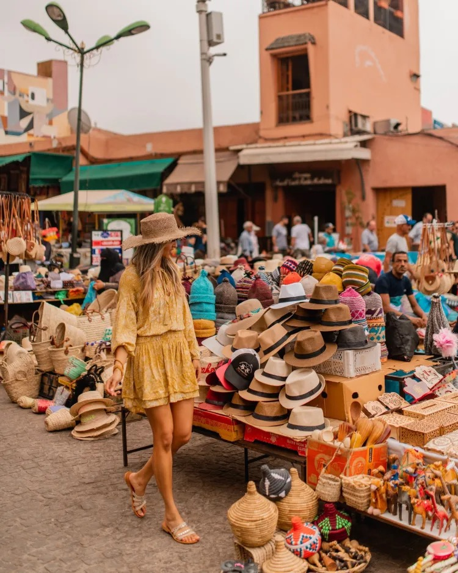

🏜 Sahara Desert
Ride camels across endless dunes under pristine starry night skies.
Wander ancient medinas, trek across the Sahara Desert, and experience centuries of culture and history.
Start ExploringExplore the vibrant markets, gardens, and local cuisine.
“Remember, this part of the city is not just for tourists.”

Ride camels across endless dunes under pristine starry night skies.
Explore ancient medinas, colorful souks, and historic royal palaces.
Rugged peaks and Berber villages perfect for trekking and adventure.
Enjoy savory tagines, aromatic couscous, and traditional mint tea.
It is also where people live, work, and go to school. Ask yourself: if you were on the other side of the camera, what would you want to happen?
Winding off of the main streets where goods are for sale are smaller residential streets called derbs. Mixed into the workshops and homes are restaurants, food shops, and street vendors. There truly is a little bit of everything. There’s even more happening that goes completely beyond what you will see from the main street layout of the famous market in Marrakech.
But what if I get lost in the medina?
The question isn’t if you get lost, the question is how soon you’ll get lost.It took me over a year to finally get my bearings and learn how to navigate the streets of the souk. For first-time visitors, it’s completely inevitable. Go into the experience knowing you’re likely to get lost and accept it as part of having an authentic Marrakech experience! Don’t panic if ever you find yourself getting lost in the Marrakech night market. You’ll find signs scattered through the souks with arrows pointing directly to Jemaa el-Fnaa, so if you want to exit, just follow the signs or ask a vendor to point you in the right direction.
Finding electrical plug-ins and water hookups may prove to be the most difficult challenge. Outside of a dedicated campground, you likely won’t find exterior hookups. It’s however not uncommon to see campers parked overnight in public parking lots. If you need to wash laundry, there aren’t self-service laundromats, however, you can take your clothes to be washed at a local laundry service for a relatively small fee.
Towering kasbahs, luxurious riad gardens, and sumptuous hotel rooms are all a part of the traveler's imagination when it comes to Morocco. However, for those who prefer something a little less expensive and closer to nature, camping and RVing sound closer to their dreams. Morocco is not as infrastructure-friendly for camping as the United States or Europe, however, there are more and more locations catering to visitors who prefer sleeping under the stars.
Morocco has several stunning national parks like Al Hoceima National Park and Toubkal National Park. These are protected wildlife refuges and are perfect environments for climbing, hiking, and wilderness camping. You will want to take weather into consideration. Contrary to popular belief, not all of Morocco is warm and sunny year-round. Autumn and winter months can be quite cold, especially at higher elevations—remember, it does snow in the High Atlas Mountains. Further south, the Anti-Atlas mountains are more rocky and the opposite weather extreme needs to be monitored. It can become extremely hot as you approach the Sahara desert.

Indigenous cultures shaped Morocco's foundations.
Trade and settlement expanded along the coast.
Architecture and culture flourished.
Independence achieved in 1956.
Morocco does have scorpions and snakes. In rural wilderness areas, wild boars and monkeys are also worth keeping in mind. Tent camping proves a little more troublesome when keeping these creatures out. Make sure to keep your food completely sealed and put away. Pick up and get rid of all garbage, especially before nightfall. Scorpions are found in the warmer desert zones; when nights get cold they look for warm places to curl up, so it’s highly recommended to shake out your sleeping bag before going to bed and storing your bedding rolled up during the day.
Have you camped in Morocco? I’d love to hear about your experience!
Ancient Roots: Morocco’s history is a fascinating blend of civilizations:
A Blend of Influences: Morocco represents a unique cultural fusion:
Moroccan cuisine reflects its diverse cultural influences:
Key Industries driving growth: